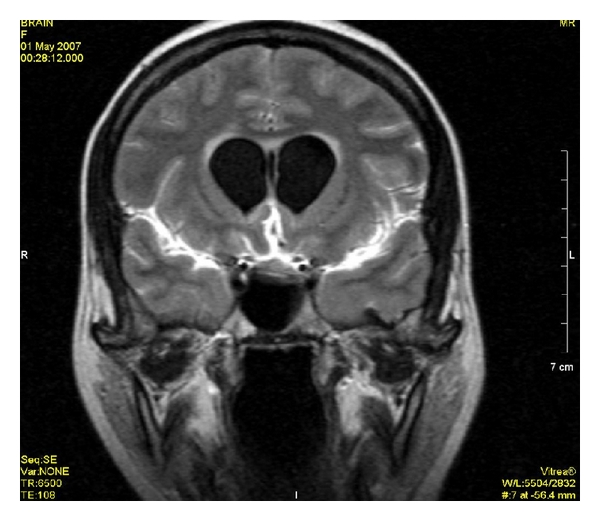

Erro comum desmontado · Pág. 04 de 20
Provocada × não provocada: a meningite dual
Muitos leem “meningite + crise” e já carimbam epiléptico. Não é automático — o tempo da doença decide. A mesma palavra pode significar duas coisas opostas.
A crise provocada nasce de uma alteração aguda de homeostase — tire o gatilho, a crise some. A crise não provocada nasce de um cérebro que voltou diferente. A meningite pode ser as duas coisas, dependendo de quando você olha.
O que torna a crise provocada
Crise provocada: causada por alteração aguda de homeostase capaz de afetar o funcionamento neuronal. O cérebro pode ser estruturalmente normal — o problema é o ambiente, não o parênquima.
Hiponatremia e hipoglicemia
Exemplo clássico: hiponatremia (sódio 140 → 105 em dias) — o neurônio sofre com a variação de sódio; o cérebro é estruturalmente “normal”; não se rotula epiléptico. Hipoglicemia: repor a glicose encerra o gatilho; não implica lesão epiléptica de base.
Pegadinha de ouro · a meningite dual
Aguda
Meningite / meningoencefalite em vigência aguda irrita o córtex → crise provocada enquanto inflamado.
Sequela
A cicatriz pós-meningite pode virar foco epileptogênico → o paciente pode se tornar epiléptico.
A mesma palavra “meningite” na prova pode significar provocada ou não provocada — depende se o contexto é inflamação aguda ou sequela.
Meningite dual
A meningite / meningoencefalite aguda irrita o córtex → crise provocada enquanto inflamado. Regra de ouro / pegadinha: meningite dual — em vigência aguda é provocada; a sequela cerebral pós-meningite pode virar foco epileptogênico → o paciente pode se tornar epiléptico. A mesma palavra “meningite” na prova pode significar provocada ou não provocada — depende se o contexto é inflamação aguda ou sequela.
Qualquer pessoa com o distúrbio suficiente
A crise provocada é capaz de ocorrer em qualquer pessoa com o distúrbio homeostático suficiente — não exige “cérebro epiléptico prévio”. É por isso que ela não fecha epilepsia: o cérebro volta ao normal quando o gatilho sai.

Resumo operacional
Provocada = homeostase aguda (tire o gatilho, encerra); sequela pode virar foco e configurar epilepsia.
Por que importa
A banca usa a mesma palavra (“meningite”) nas duas colunas. Ler o tempo da doença é o que separa alta de AED crônico.
Quiz
Conexão
Entendido o que é crise “de verdade”, vem a alma fisiológica: a crise é hiperexcitação — e cada domínio traduz a própria função.